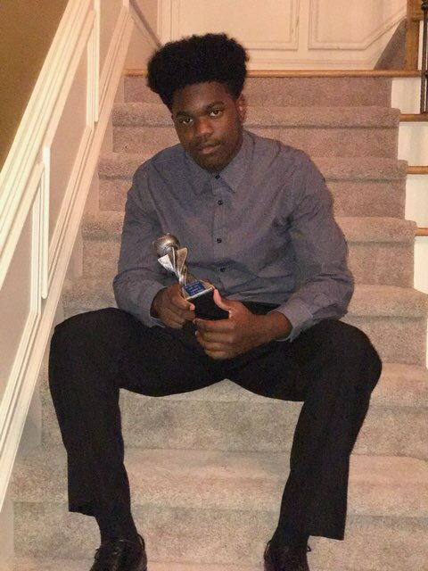

Hello, my name is Kennedy Odiboh. I’m a rising sophomore at Berkmar High School in Lilburn, Georgia. I was born in Atlanta, Georgia to very loving and diligent Nigerian parents. My dream is to attend Vanderbilt University to major in neuroscience and minor in the biological sciences. As a high school student, I enjoy spending my time looking for ways to better myself and my community. I felt a special responsibility to embark on this project because I have five siblings that I’d do anything for, and I’ve seen panic reside in my mom’s eyes when she cannot figure out what is wrong whenever my siblings and I fall ill. To think that shigellosis could have affected us at any age is upsetting because of the fact that we would have had no way of treating it. I would not wish this upon any member of my community, so that’s why I set out to raise awareness.
 Hello my name is Marc A Lewis a rising sophomore at Stephenson High School. I am 15 years old and am from Decatur Georgia. I aspire to attend University of Alabama and major in Mechanical Engineering with a minor in Mathematics. I play Varsity baseball and football for my high school. Currently I am attends Smash Academy where I am learning various things about myself and engineering. The disease we are working on is important to me because it is not known very well and it has a very large impact on our communities especially the lower income communities. I want to bring awareness to everyone because it is that important.
Hello. My name is Warren Nicholas Rouse IV. Welcome to my world. I am a Rising sophomore at Charles R. Drew Charter School Senior Academy.I am 15 years young and originally from Anaheim, CA. I aspire to attend the University of Southern Califorina and be a Sports Journalist. I am curently in the Naational Beta club at my school. I want to play football at a school that will take me and . I've wanted to be a sports journlist since I was young .I have a younger sister and I'm the oldest grandchild on either side of the family. This is important to me because I have a lot of younger cousins who could be sususceptible to this disease and they are a big part of my life and it would hurt me if they wernt here anymore. So I want to stop it now so I never have to worry ever.
Hello my name is Reign im a rising sophomore at Maynard Jackson High school. My goal in life is to become a aerospace engineer and hopefully own my own business but that’s not my focus today,my focus today is to inform you.I am 15 years of age and im currently studying the disease shigellosis with my study group.We developed this website full of information to raise awareness and to spread information about our disease. THANKS FOR THE LOOK AT MY BIO